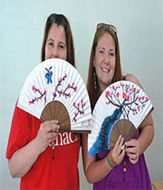
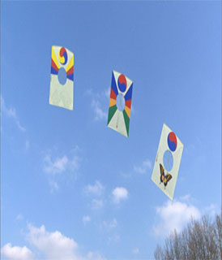
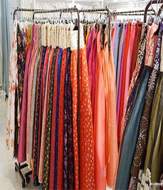
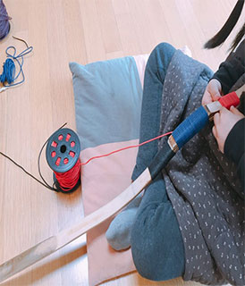

-

떡박물관 체험
떡박물관은 우리 조상들의 지혜롭고 슬기로웠던 삶의 모습과 숨결을 느낄 수 있는 체험 공간이자 산교육의 마당입니다.
-

닥종이만들기 체험
우리 나라 고유의 전통 한지를 이용한 닥종이인형 예술을 보고 체험해보세요.
-

고궁박물관 체험
조선왕실과 관련된 유물을 수집, 보존, 연구, 전시함으로써 조선왕실의 문화를 알리고 보존하는 것을 임무로 하는 조선왕실 전문 박물관입니다.
-

김치만들기 체험
서울 김치체험관은 우리나라 대표음식인 김치만들기 체험을 통해 세계인에게 우리의 문화를 알리고 있습니다.
-

한복 체험
한복 디자이너, 포토그래퍼를 비롯한 전문 스탭이 한복체험은 물론 한국의 혼례식을 현대적으로 재해석한 혼례체험 및 기념촬영 등을 진행하고 있다.
-

활만들기 체험
2013 영집궁시박물관 "활만들기 체험프로그램" 안내 .영집궁시박물관의 활만들기는 기본활, 중형활, 소형활의 3종류로 나뉘어 있습니다.